5. Superconducting qubits#
Source
This chapter follows TU Delft’s QTM2x course on edX closely, with its figures and quizzes, and adds my own notes. Where the text says we, the course’s lecturers are speaking. I am grateful to TU Delft for teaching this openly.
In ? and ??, we discussed spin qubits in semiconductor quantum dots and nitrogen-vacancy centers. Despite the differences, in both cases qubits were realized with the spin degree of freedom of the electron. It is now time to discover a totally new platform: superconducting qubits.
If a quantum computer is able to perform complex quantum algoithms it might need millions or even billions of qubits. Superconducting qubits are nowdays one of the most advanced platforms in the quantum community regarding the number of qubits, and many large companies, such as Google, Intel and IBM, are now investing in them. IBM Quantum experience is an online platform where users from the3 general public can already access a five-qubit processor and run small algorithms.
Now we will describe a transmon, one of the basic building blocks of superconducting qubits. Later explain how to perform the operations required by universal quantum computation: qubit measurements, single-qubit gate and two-qubit gates.
5.1. The transmon qubit#
In this three-part series on the introduction to superconducting qubits, we start by introducing the basic concepts of one kind of superconducting qubit, and then gradually proceed to materials about a full-fledged quantum processor comprising of many qubits.
We will entail the physics behind a transmon qubit, which is an example of a superconducting qubit. Remember that the elaborate expressions and notations are not meant to intimidate the avid learners. It will suffice to grasp the core concepts. If however, all those notations have got you enthused, then we recommend you to go through all the different nuances and enhance your learning; because courses like these are not just meant to be passed and forgotten, are they?
5.2. Superconducting circuits as qubits#
Now an introduction to quantum computing with superconducting quantum circuits; more specifically, quantum computing with transmon quantum bits or qubits in the circuit quantum electrodynamics architecture. Superconducting qubits differ in two important ways from truly quantum two-level systems provided to us by nature, such as the spin of an electron or the spin of certain nuclei, like Carbon 13 or Silicon 29.
First, they are multi-level systems, not unlike the electronic levels in atoms. Multi-level quantum systems can be used effectively as qubits by confining all dynamics to two quantum levels, usually the ground state and the first excited state of the system. Second, these qubits are circuits that we fabricate ourselves!
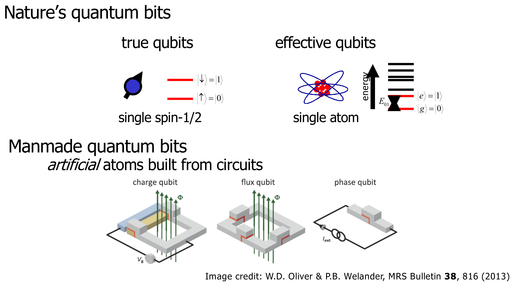
This has advantages and disadvantages.On the bright side, we have freedom to design! In a sense, we can play god designing artificial atoms. However, fabrication uncertainty keeps us from making any two qubits the same! For this reason, we like to say that qubits have individual personality! While the form of the Hamiltonian describing them quantum mechanically is well known, the parameters of this Hamiltonian cannot be perfectly targeted in fabrication. This has interesting implications for scaling up our quantum processors, which I will discuss in a later video. But back to design. Superconducting qubits generally consist of superconducting electrodes, or islands, that are interconnected by Josephson junctions. The Hamiltonian typically consists of two non-commuting contributions, one capacitive and one inductive. The first tends to localize Cooper pairs. The second favors their tunnelling from one island to another, in other words, their hopping. There exist numerous varieties of superconducting qubits: the charge qubit, the flux qubit, the phase qubit, the fluxonium, and many more. These qubit types differ in terms of the number of superconducting islands, the number of junctions, and, also importantly, the relative energy scales of the capacitive and inductive terms. Typically, superconducting qubits work in the frequency range between 4 and 8 GHz, approximately. This frequency, let’s call it f*{01}, is related via Planck’s constant to the energy difference E*{01} between the quantum levels that we assign as states 0 and 1.f_{01} is also the frequency of the microwave pulses that we need to induce coherent transitions between these levels. In this course, we will focus on the transmon, a derivative of the charge qubit.
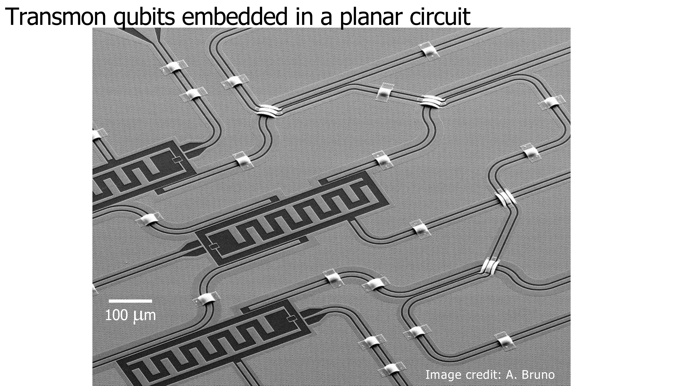
The transmon is the superconducting qubit that we specialize on in QuTech. In its simplest form, the transmon consists of two islands interconnected by one junction.
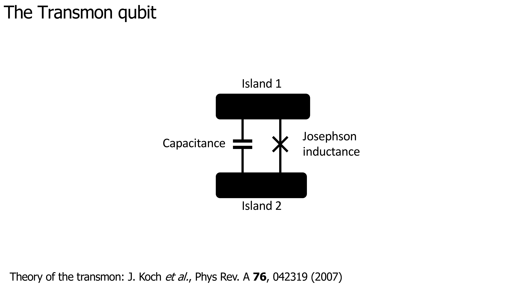
Those of you familiar with circuits, particularly the electrical engineers, will recognize that the transmon looks, well, just like a parallel combination of one capacitor and one inductor.In other words, an LC oscillator! This gets us most of the way there, so let’s take a look. The Hamiltonian for the LC oscillator consists of two terms that are each quadratic with respect to one variable:
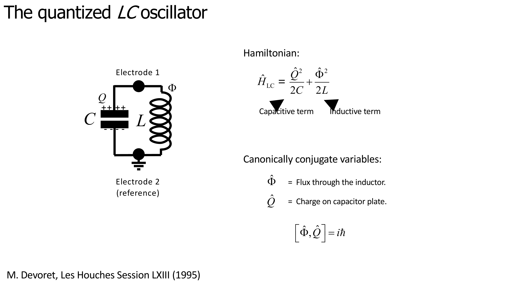
The capacitive term is quadratic on the charge accumulated on one island, the opposite charge is accumulated in the other. The inductive term is quadratic on the flux through the inductor. This charge and this flux do not commute. In fact, they are canonically conjugate variables. A direct correspondence between this Hamiltonian can be made to that of the simple harmonic oscillator by mapping flux to the position of the mass and charge to the mass’ momentum.
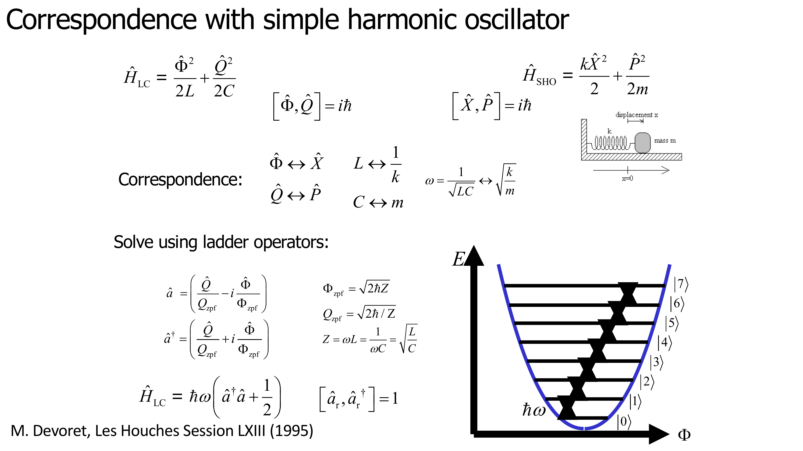
Physics students will thus not be surprised to learn that the spectrum of the quantized LC oscillator is perfectly harmonic: levels are equally spaced in energy! This equal spacing is given by a familiar formula: one over root LC. But unfortunately, a harmonic spectrum does not a good qubit make! It is very difficult to confine the dynamics to just two levels, so ‘leakage’ out of the qubit subspace is a permanent threat.That is why the transmon differs from the LC oscillator in a fundamental way.
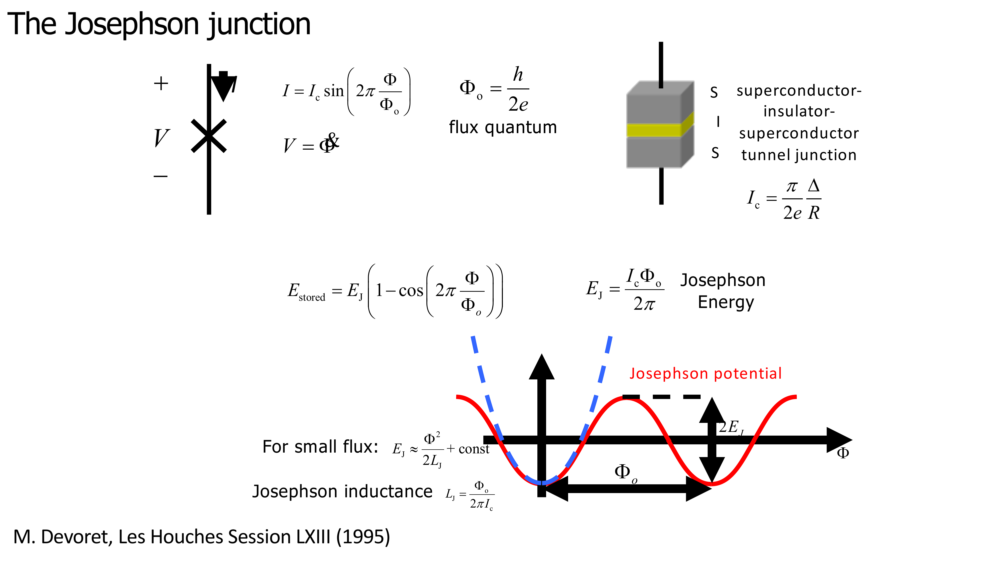
In the transmon, the inductance is provided by a Josephson junction and not by a typical coil inductor. The inductive energy for the junction is not quadratic, but a cosine function of the generalized flux through it. This difference has important consequences for the spectrum: crucially, it disrupts the harmonic spectrum in ways that are very practical. At typical parameter values deep in the so-called transmon regime, where the energy scale of the inductive term is much larger than that of the charging termand let’s say, for the frequency f_{01} of about 6 GHz, the transition from the first to the second-excited state is lower by approximately 300 MHz.
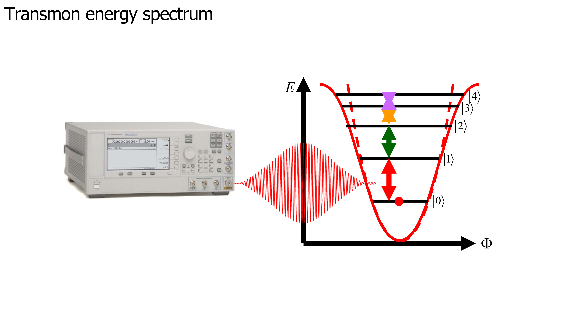
This difference is sufficient in practice to confine the dynamics to the lowest two levels, our qubit subspace, when performing single-qubit gates with pulses of duration about 20 ns. Brian will discuss the implementation of single-qubit gates in detail. As a final note, we build our transmon not from one but two Josephson junctions in parallel.
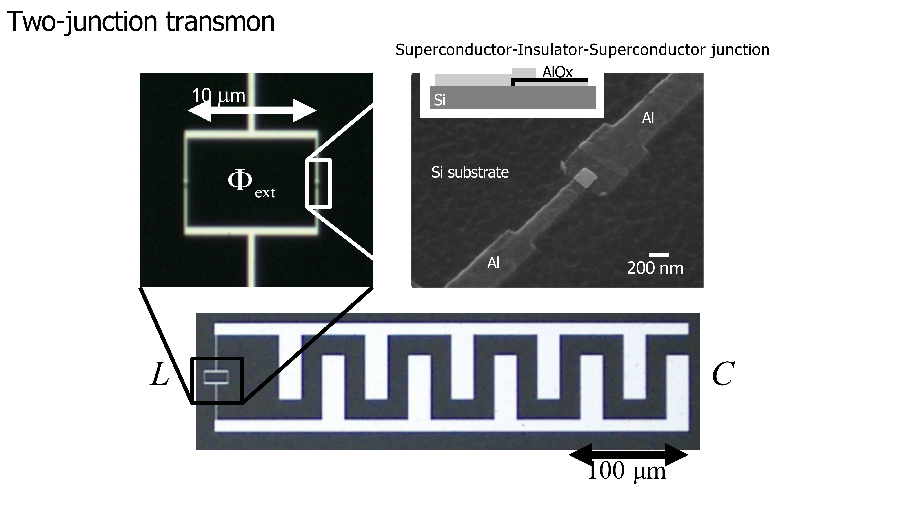
This gives us the possibility to tune the inductive element and thereby the qubit transition frequency, by threading a magnetic flux through the loop defined by the two junctions. We can do this independently for each qubit and on nanosecond timescales.
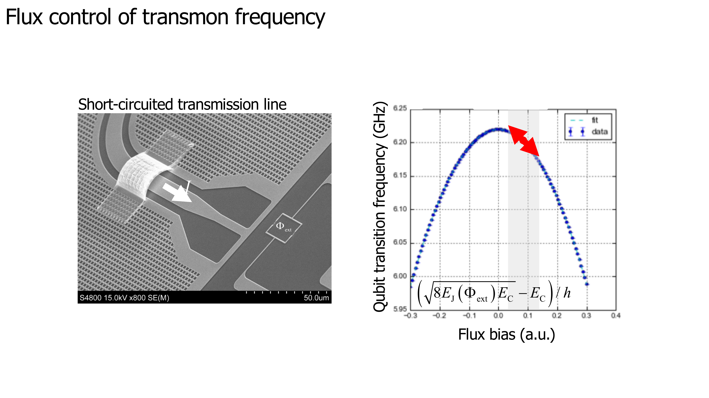
This capability is the workhorse enabling two-qubit gates. Adriaan will present these in a later video.
5.2.1. Main takeaways#
It is possible to create superconducting qubits by restricting all dynamics to (generally, the lowest) two levels of the multiple levels of the system.
Transmon qubits are an example of one of the many different kinds of superconducting qubits.
In a transmon, the inductance is provided by a Josephson junction and not by a typical coil inductor. This disrupts the harmonic energy spectrum and helps confine the system to two levels.
5.3. Circuit QED#
Having learnt about the transmon qubit, let us now learn about how to combine a qubit with resonators that help perform operations on the qubits. During the video, Leo poses a question. If you think you have an answer to his question then participate in the discussion forum titled ‘Forum on circuit QED video’ that you can find below the video!
5.3.1. Circuit Quantum Electrodynamics#
Last we introduced our superconducting qubit of choice in QuTech, the transmon. We focused on a transmon in isolation, studying its weakly anharmonic spectrum. Now, we will add the remaining ingredients that we need to perform qubit readout and two-qubit gates. These ingredients are transmission-line resonators.
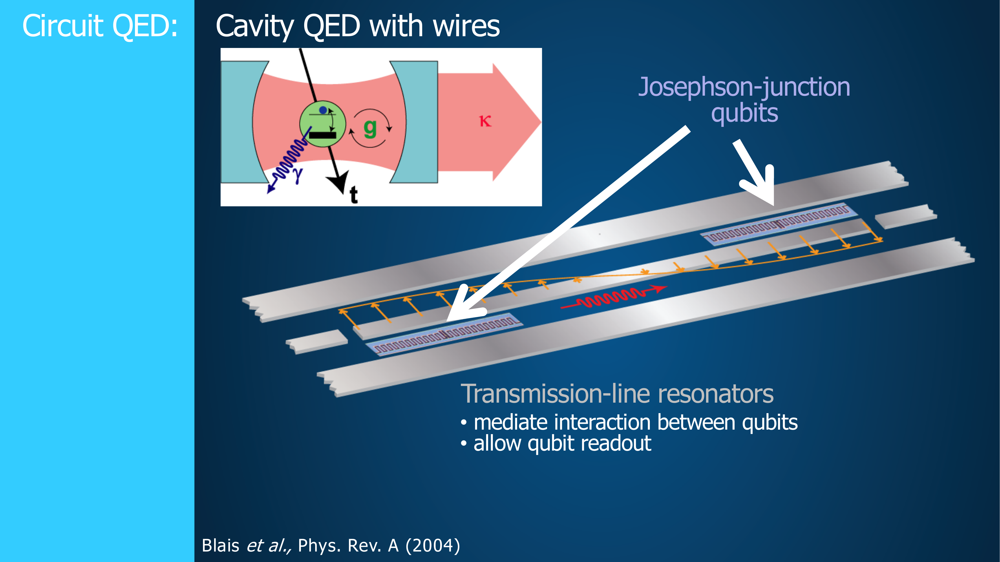
The resulting architecture for quantum hardware, combining qubits and resonators, goes by the name of circuit quantum electrodynamics, or circuit QED.As this name suggests, circuit QED is a solid-state version of cavity QED, an older field of physics that studies the interaction between light and matter at its most fundamental, with flying atoms and single photons trapped inside three dimensional cavities. In circuit QED, qubits play the role of atoms and transmission-line resonators play the role of cavities.
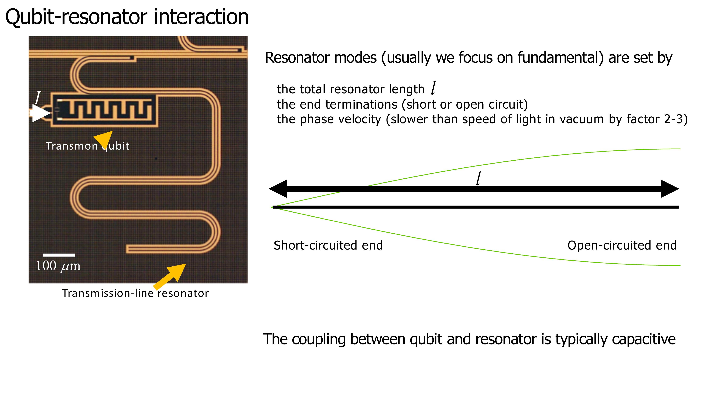
We build these resonators from coplanar waveguide transmission lines that are terminated with either open- or short circuits. For example, the resonator I show you here has a short at the far end, and an open termination at the close end. Well, it’s not exactly open. The resonator at this end couples capacitively to a feedline that will be used later to interrogate the scattering properties of the resonator near its fundamental frequency. This fundamental mode corresponds to the length matching approximately one quarter of the wavelength. For this reason, we call it a quarter-wave or lambda over four resonator. Resonators have higher modes of resonance as well, but most of the time, we focus exclusively on the fundamental. The capacitive coupling between the qubit and the resonator is most clearly visualized by performing spectroscopy of the combined system.
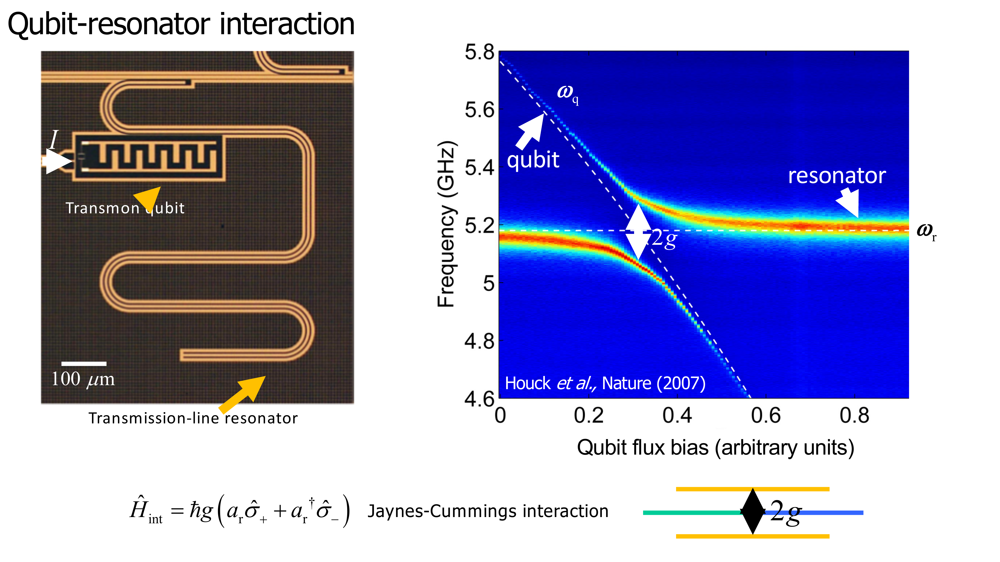
As this typical image shows, as we tune the qubit through resonance with the resonator, we observe the emergence of an avoided crossing. This avoided crossing is known as the vacuum Rabi splitting. The minimum splitting is equal to twice the coupling constant, g, in the celebrated Jaynes-Cummings Hamiltonian describing the system quantum mechanically. Most of the time, however, we avoid this resonant regime. We tend to focus on the so-called dispersive regime in which the detuning Delta of the qubitwith respect to the resonator is several times larger than g in magnitude. In this dispersive regime, there is a small but finite remnant of the avoided crossing.
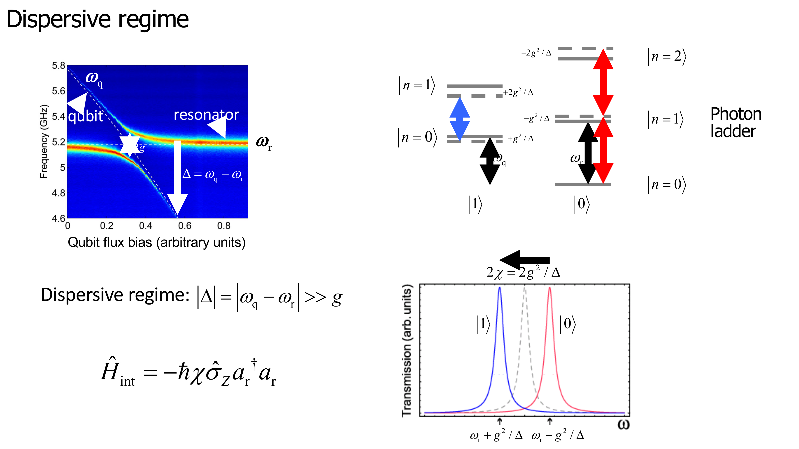
If we consider the avoided crossings arising between qubit-resonator levels with equal total number of excitations, we learn something very useful: the ladder of photon excitations remains harmonic, but the resonance frequency depends on the state, |0> or |1> of the qubit. This dependence of the resonator frequency on qubit state is the key ingredient allowing qubit readout. We can interrogate the resonator, and thereby also the qubit, by measuring the transmission properties of a microwave pulse applied to the feedline with a frequency close the bare fundamental. Niels will cover this in greater detail in his video. Moving on, when two qubits couple to a common resonator, an avoided crossing is also observed when one qubit is tuned through resonance with the other qubit.
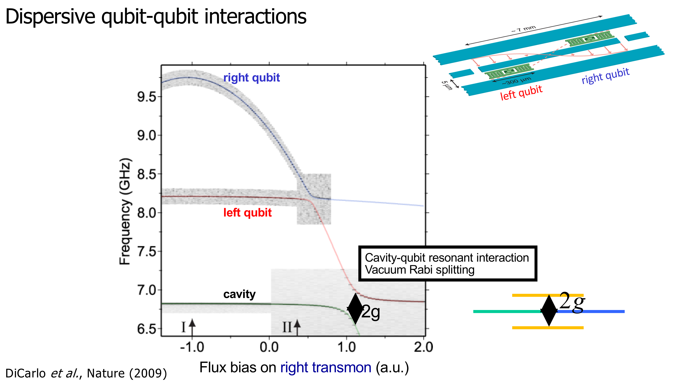
Compared to the vacuum Rabi splitting, which you can see here, the qubit-qubit avoided crossing is smaller, by a factor (g/Delta). These qubit-qubit interactions mediated by a dispersively coupled common ‘bus’ resonator are the key to doing two-qubit gates.
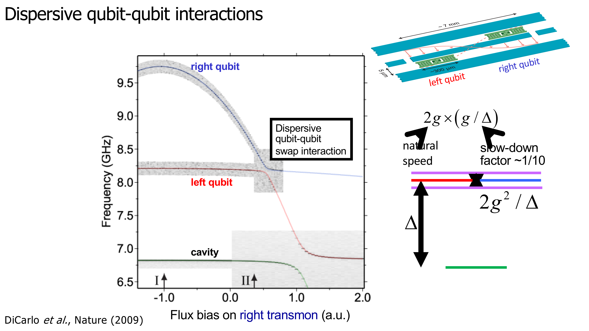
Fig. 5.1 tr6c#
We will discuss the specific avoided crossing that we use to implement two-qubit conditional-phase gates. Hint: it is not this one! So, let’s now see examples of how transmons and resonators can be combined to build simple quantum processors. This is the first one I built, back in 2008, together with collaborators at Yale. It has two transmon qubits and only one resonator. This resonator is used for both qubit-qubit coupling and readout functions. The resonator has capacitive terminations at both ends, so it’s a half-wave or lambda over two resonator.
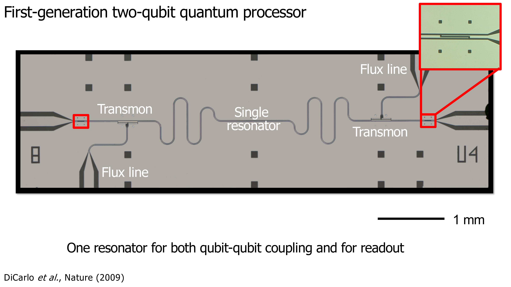
The optimal parameters of a resonator for readout and for coupling are often in conflict with one another. For this reason, the next generation of processors that we built in Delft uses different resonators for these functions. Here’s an example two-qubit processor from 2013.
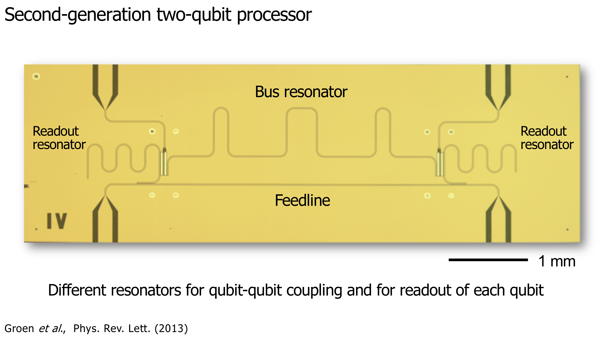
Note the common lambda over two bus resonator in the middle, and the lambda over four readout resonators, one per qubit, coupled to the common feedline. Here we see the same concept in a four-qubit processor. The planar constraints required us to have two feedlines.
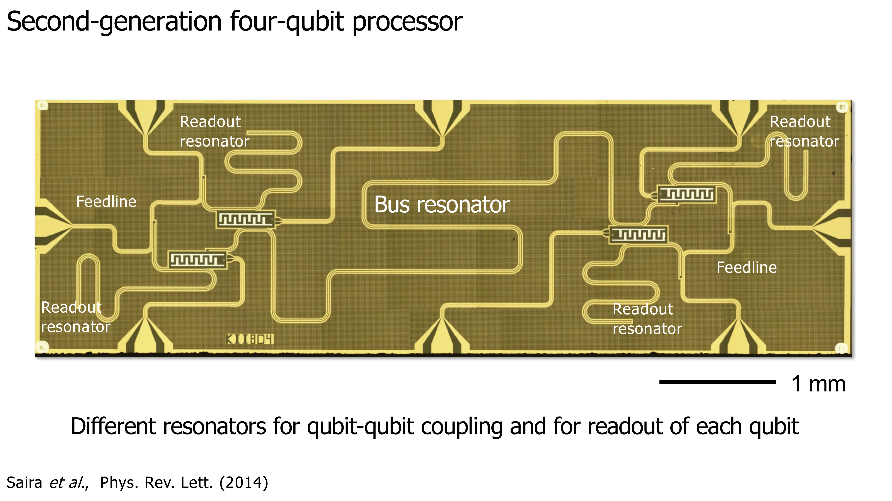
Hopefully, you can easily recognize the bus resonator common to all 4 qubits, and the dedicated readout resonators, one for each qubit. So, as a simple exercise, I challenge you to identify the bus resonators and readout resonators in this five-qubit processor from 2015.
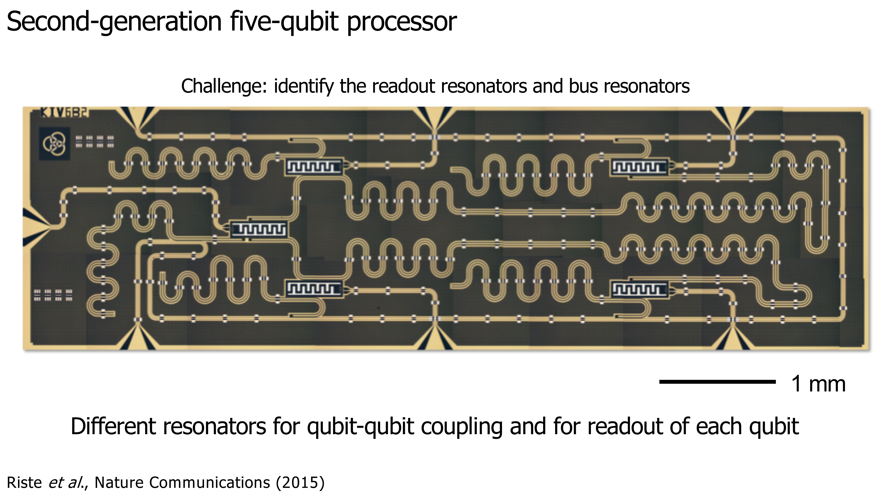
Fig. 5.2 tr10c#
How many of each are there? In this more complex processor, we could get away with one feedline for all readout resonators! You will see the trick or the astuce in the next video! To motivate this next video on scalable circuit QED, note that all of these processors have a common form factor (roughly 2 mm by 7 mm) and a common location of the up to eight ports connecting them to the external world. This reflects the use of a common printed circuit board throughout all these years! Surely a new approach must be taken to increase the qubit count! And indeed, the third generation of quantum processors completely rethinks the approach, with extensibility to hundred qubits as the top priority! I can’t wait to show you!
5.3.1.1. Main takeaways#
Circuit quantum electrodynamics (QED) involves the combining of quantum hardware with resonators.
In the second-generation processors for superconducting qubits, there are dedicated resonators for readout of each qubit and a commmon ‘bus’ resonator connecting to all the qubits.
The frequency of a readout resonator depends on the qubit state; and this dependence is the key ingredient that facilitiates the measurement of qubits.
By mediating the inter-qubit interaction on the common ‘bus’ resonator, it is possible to perform two-qubit operations.
5.4. Assembling a quantum processor#
5.4.1. Assembling a quantum computer#
In this build-up from a single to few and from few to many qubits on a quantum processor, we explore the conclusion to this three-part lecture series. Here we will show how we can assemble a quantum processor from circuit QED quantum hardware. I will focus on the approach to fault-tolerant quantum computing named Surface Code. Surface code calls for a 2-dimensional square lattice of qubits with only nearest-neighbor interactions.
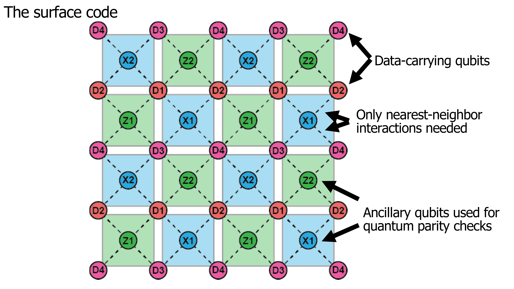
In addition, these qubits must be individually addressable both for single-qubit gating and for measurement. Currently, we are testing surface-code chips with 7, 17 and 49 qubits. We call these Surface-7, Surface-17, and Surface-49.
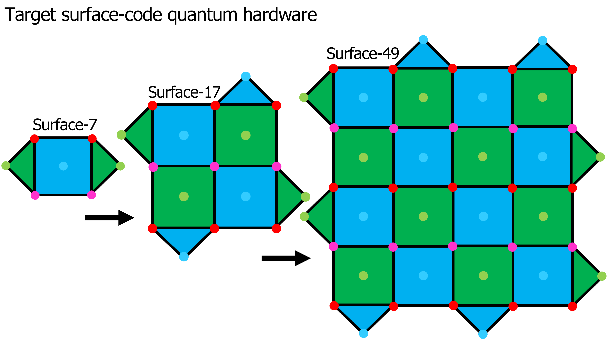
We assemble all of these using a common approach that we believe scales to larger surfaces.I will now describe this approach using the specific example of Surface-17. First we layout the square lattice of qubits. Let me symbolize the qubits by circles.
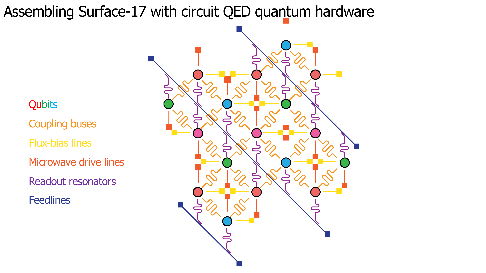
Please disregard their assigned color, for now. To perform two-qubit conditional-phase gates between nearest neighbors, as presented by Adriaan, we add first, a coupling bus resonator to interconnect them; and second, a dedicated flux-bias control line to each qubit. To perform single-qubit gates, we follow the approach introduced by Brian, adding a dedicated microwave drive line to each qubit. Finally, in order to measure each qubit individually, we add dedicated readout resonators. These readout resonators are coupled to diagonally running feedlines and probed independently using frequency division multiplexing as described by Niels. You may have already noticed the crossing of transmission lines on the chip, which is not possible in a truly planar structure.
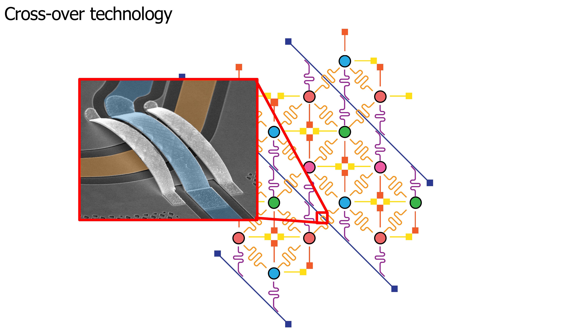
For this, we make use of the third dimension, in the form of air-bridge crossovers. Cool stuff, isn’t it? Beautiful. So let’s look at the totals for Surface-17: 17 qubits, 24 buses, 17 readout resonators, 17 flux lines, 17 microwave drive lines, and 3 feedlines.
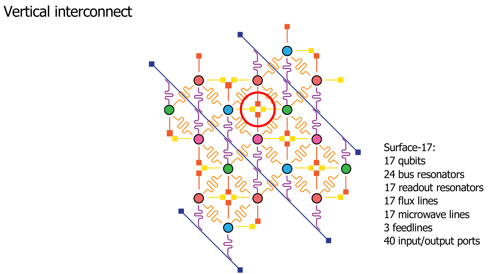
The grand total of ports connecting the quantum chip to the outside world is 40. We call these ports vertical I/O ports because they connect to the outside world not via the edges of the planar chip, as traditionally done, but vertically.
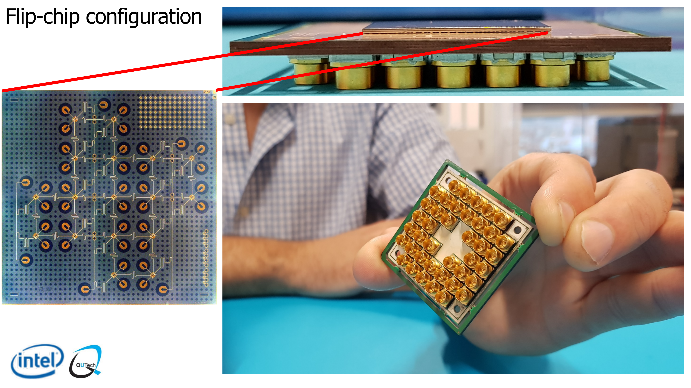
In one approach, which we purse together with Intel, the quantum chip is flipped and the ports connect directly to a multi- layer printed circuit board using a ball-grid array. Achieving reliable vertical interconnect has been a key pursuit in our field over the last few years! Now, let’s go back to the colored circles representing our transmon qubits.
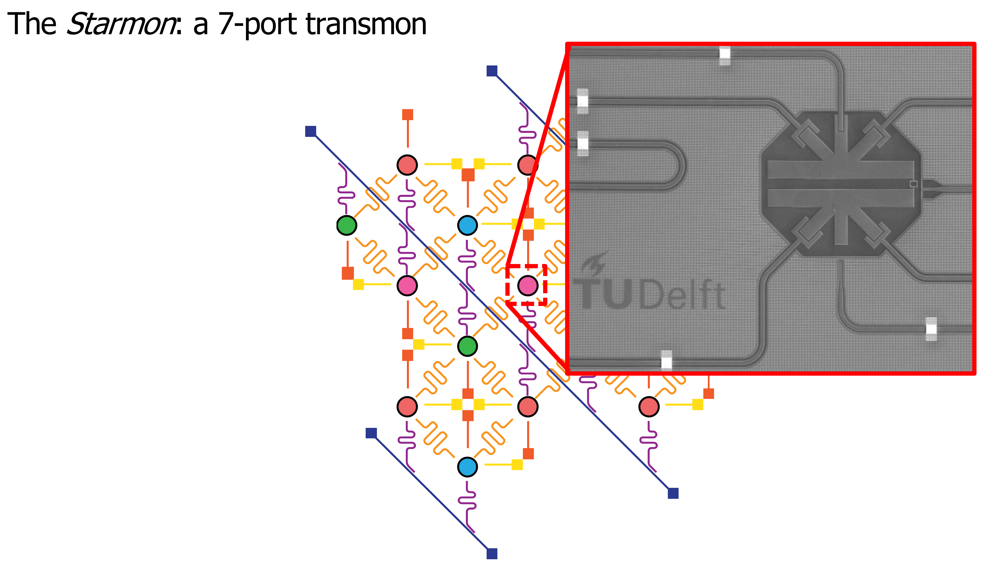
Except on the edges, qubits couple to 7 objects: 4 buses, 1 readout resonator, 1 flux line, and 1 microwave line. These interconnectivity requirements give our transmons a characteristic shape and nickmane, Starmon. The colors we assign to the circles denote the qubit operating frequency, at which single-qubit gates are performed.
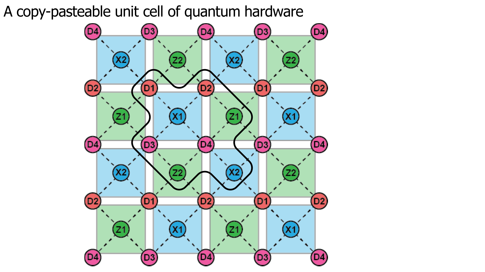
In total, four frequencies suffice to control a surface-code of any size!
This affords us significant savings in the microwave-frequency control electronics (which unfortunately, I don’t have time to discuss here). But with regards to the quantum hardware, this repetition of qubit frequencies allows us critically to define an 8-qubit unit cell. By exactly replicating this 8-qubit unit cell and performing the necessary truncation at the boundaries, we can build a surface code of arbitrary size!
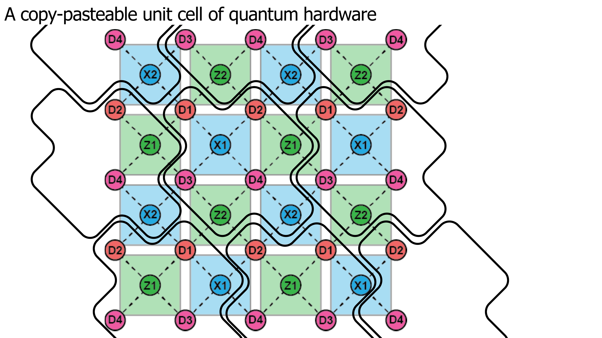
In fact, we put together Surface-49 test chips in this very way, literally copy-pasting and truncating.
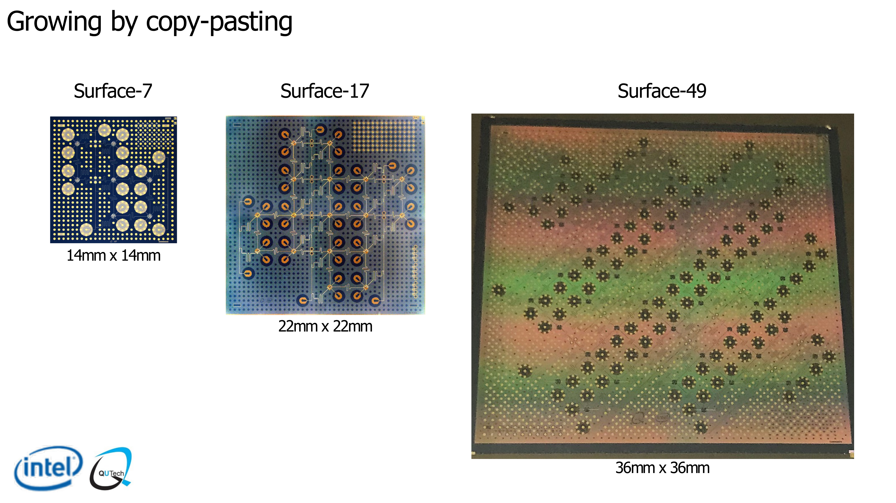
We believe this approach will scale to even larger surface codes, such as Surface-97. I leave you with the CAD drawing of such a future chip!
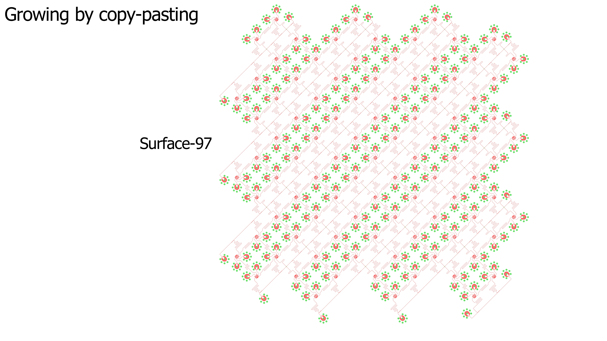
5.4.2. Main takeaways#
Surface Code is a fault-tolerant approach of assembling a quantum processor from the hardware of circuit quantum electrodynamics.
Surface Code is a 2-dimensional square layout of qubits facilitating nearest-neighbour interactions and individual qubit address-ability.
Four frequencies are sufficient to control a Surface Code of any size. This leads to an arbitrary-sized Surface Code being composed of repetitive 8-qubit unit cells.
5.4.3. Practice Quiz 8#
In this quiz we will be assembling a quantum processor.
5.4.3.1. Question 1: Assembling a Surface Code chip#
PROBLEM
In the video you must have come across the purposes of various components used while assembling a Surface Code chip. In this problem, each of the four blue boxes have a component name on them. Below these boxes, there is a white rectangle with four square shaped zones placed in a horizontal manner. Each of these four zones denotes a purpose of the components in the blue boxes. Your job is to drag and drop each of the four blue boxes to the corresponding zone below. This means that you are expected to map a component on the chip to its correct purpose. Note that there is a strict one-to-one correspondence between the components and the purposes, meaning that there is a purpose (i.e. zone) for every component (i.e. blue box); and each zone can have one and only one blue box.
FEEDBACK Drag the items (blue boxes) onto the image above.
Microwave drivelines -> To perform single qubit gate
Coupling bus resonator -> To perform two-qubit gates
Readout resonators -> To perform measurement operations
Air-bridge crossovers -> to avoid crossing of transmision lines
5.4.3.2. Question 2: I/O ports on Surface-17 chip#
How do the Input-Output (I/O) ports on the Surface-17 chip differ from the I/O ports on conventional chips? Check the box that applies.
The I/O ports on the Surface-17 chip are much thicker than conventional I/O ports.
The Surface-17 chip is wireless.
There is no need for input or output.
There are much less wires needed due to multiplexing all the signals input signals.
We can create a superposition of input and output signals on these wires. This is due to the fact that 17 is a prime number.
The I/O ports on Surface-17 chip connect vertically to the outside world; whereas the I/O ports on conventional chips connect horizontally to the outside world.
The I/O ports on Surface-17 chip are just like the ones on conventional chips.
Explanation While connecting to the outside world, the I/O ports on Surface-17 chip do not connect through the edges (i.e. they do not connect horizontally); instead they connect in the direction perpendicular to the surface of the chip (i.e. they connect vertically).
5.4.4. Quiz 8: Superconducting qubit#
In this quiz, you will be tested on the content from the Introduction to Superconducting Qubits series. Questions 1 to 7 are based on the transmon qubit; question 8 briefly delves into concepts introduced in circuit QED.
Question 1: The transmon qubit
A transmon qubit is an example of which of the following?
Flux qubit
Fluxonium centers
Charge qubit
Phase qubit
5.4.4.1. Question 2: A quantised LC circuit#
The transmon qubit and LC oscillator
Having started on a lighter (and perhaps, an easier) note, let us now inspect how similar or different a transmon qubit is compared to an LC oscillator. For this purpose, we will first focus on a quantised LC circuit. In the video, it has been mentioned that the angular frequency \((\omega)\) to transition from one level to the next in a quantised LC circuit is related to the inductance \((L)\) and capacitance \((C)\) values as follows:
Now, the transition frequency \((f)\) of that circuit is related to the angular frequency \((\omega)\) as follows:
Use this information to answer the following question. In a quantised LC circuit, what is the transition frequency \((f)\) for going from one level to the next if the inductance offered by the coil is \(1.6\) Henry and the capacitance is \(0.1 \mu\) Farad? (Note that \(1 \mu \operatorname{Farad}=10^{-6} \mathrm{Farad}\).)
\(\frac{5000}{2 \pi}\) Hertz \(\frac{2500}{2 \pi}\) Hertz \(\frac{1250}{2 \pi}\) Hertz \(\frac{625}{2 \pi}\) Hertz
Explanation It is intuitive that \(f=\frac{1}{2 \pi \cdot \sqrt{L C}}\). Now simply plugging in \(L=1.6\) and \(C=10^{-7}\) into the aforementioned formula gives the answer.
5.4.4.2. Question 3: Transition frequency in LC oscillator#
Does this transition frequency remain the same for transition among any two consecutive levels in a quantised LC circuit?
Yes
No
5.4.4.3. Question 4: Transition frequency in transmon qubit#
If the transition frequency of going from level 0 to level 1 in the circuit for a transmon qubit is \(f_{0,1}\), then is the transition frequency of going from level 1 to level 2 (i.e. \(f_{1,2}\) ) in the same circuit also equal to \(f_{0,1}\) ?
yes
No
Explanation The spacing between the levels in a circuit for a transmon qubit is not harmonic. This is why we can use it as a qubit!
5.4.4.4. Question 5: Josephson junction#
What is the implication of the use of a Josephson junction in a transmon instead of simply using an inductor (as in case of an LC oscillator) ?
It is possible to confine the system of qubit(s) to the lowest two levels.
It is possible to go from a two-dimensional system of qubit(s) to a three-dimensional system of qutrit(s).
It is possible to achieve transition between any two consecutive levels of the system by always applying the same frequency. Submit You have used 0 of 2 attempts Save
Explanation Qubits are two-dimensional systems. Hence, to create a qubit, it is necessary to confine the system to just two levels. The use of an inductor leads to uniformly spaced energy levels. In such a case, it is difficult to confine the system to just two levels (since the application of same frequency causes transition between any two consecutive levels). However, using a Josephson junction helps ensure that the spacing between the energy levels of the system is non-uniform; and therefore, application of a particular frequency corresponds to only one particular kind of level transition.
Having learnt the similarity/difference between a transmon qubit and an LC oscillator, let us now streamline our focus completely towards the transmon qubit with a couple questions! What are the three essential parts of a transmon qubit? (Mark all that apply)
Capacitor
Islands
Inductor
Josephson junction
Resistor
In terms of the components, the circuit for a transmon qubit is quite similar to (but not excatly the same as) the circuit for an LC oscillator. An inductor is used in a quantised LC circuit (which has harmonic energy levels). Since we want the energy-level spacing to be anharmonic, a Josephson junction is used instead.
5.4.4.5. Question 7: Adding additional Josephson junction?#
Why would you add an additional Josephson junction?
To add an extra qubit on the chip.
To lower the resistance and consequently the amount of heat dissipated.
To tune the inductive element and consequently the qubit transition frequency.
It is not possible to add an additional Josephson junction without adding an extra level to the system (i.e. transitioning from a two level system to a three level system).
Explanation As seen in Question 2 of this quiz, the transition frequency is a function of inductance. By adding an additional Josephson junction, it is possible to regulate the inductance, and in turn, the frequency \(f_{i, i+1}\) (where \(i\) denotes the lower level of the two-level system).
5.4.4.6. Question 8#
Why are the resonators for readout and coupling separate on the second generation processors for superconducting qubits?
To be able to scale up from a two-level system to a four-level system without making any other modifications to the hardware.
To resolve the conflict existing among the optimal parameters for readout and the optimal parameters for coupling.
To facilitate two-qubit gating operations using readout resonators and measurement operations using coupling resonators, almost simultaneously.
The readout and coupling resonators are common; in fact, they are mutliplexed so as to perform only one kind of operation at an instance.